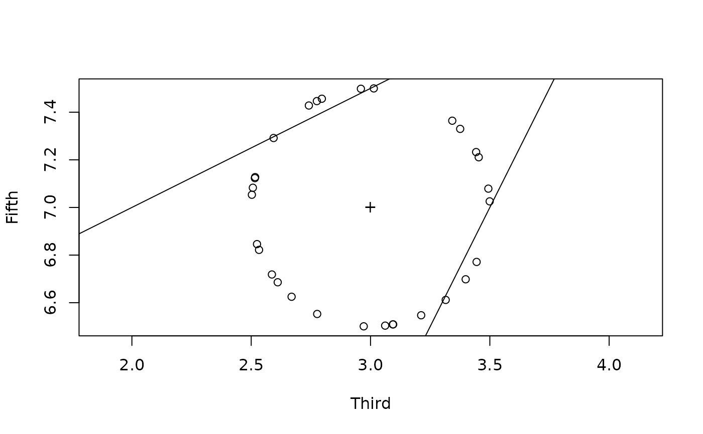

Random scales uniformly distributed on a hypersphere around an input
Source:R/surround_set.R
surround_set.RdSometimes you want to explore what other scale structures a given scale is close to. This can be done by studying the network of color adjacencies in suitably low cardinalities (see "Modal Color Theory," 31-37), but it can also be rewarding simply to randomly sample scales that are suitably close to the one you started with.
The larger your starting scale, the more complicated is the geometry of the
color space it lives in. Therefore this function generates a larger number
of random scales for larger cardinalities: by default, if the length of
the input set is card, surround_set gives card * 100 output scales.
The parameter magnitude controls the order of magnitude of your sample
(i.e. if you want ~1000 scales rather than ~100, set magnitude=3).
The size of the hypersphere which the function samples is, by default, 1.
When we're working with a unit of 12 semitones per octave, 1 semitone of
voice leading work can get you pretty far away from the original set,
especially in higher cardinalities. (For instance, C major to C melodic
minor is just 1 semitone of motion, but there are 3 other colors that
intervene between these two scales along a direct path.) Depending on your
goals, you might want to try a couple different orders of magnitude for
distance.
Value
a Matrix with length(set) rows and 10^magnitude columns,
representing 10^magnitude different scales
Examples
# First we sample 30 trichords surrounding the minor triad 037.
chords_near_minor <- surround_set(c(0,3,7), magnitude=1, distance=.5)
chords_near_minor
#> [,1] [,2] [,3] [,4] [,5] [,6] [,7] [,8]
#> [1,] 0.000000 0.000000 0.000000 0.000000 0.000000 0.000000 0.000000 0.000000
#> [2,] 2.607963 3.498752 3.495034 3.465570 3.401910 2.530101 2.573481 3.120892
#> [3,] 6.689666 6.964698 7.070293 7.182332 7.297437 6.829135 6.739075 6.514835
#> [,9] [,10] [,11] [,12] [,13] [,14] [,15] [,16]
#> [1,] 0.000000 0.000000 0.000000 0.000000 0.000000 0.000000 0.000000 0.000000
#> [2,] 2.589935 3.431911 3.477498 2.997813 3.062263 3.414989 3.356480 2.533747
#> [3,] 6.713912 7.251898 6.851691 7.499995 7.496108 7.278898 6.649398 6.819422
#> [,17] [,18] [,19] [,20] [,21] [,22] [,23] [,24]
#> [1,] 0.000000 0.000000 0.000000 0.000000 0.000000 0.000000 0.000000 0.000000
#> [2,] 2.818677 3.370768 3.178734 3.185131 3.479794 3.499996 2.537624 2.500123
#> [3,] 7.465963 7.335457 6.533037 6.535536 6.859297 6.998027 7.190286 7.011112
#> [,25] [,26] [,27] [,28] [,29] [,30]
#> [1,] 0.000000 0.000000 0.000000 0.000000 0.000000 0.000000
#> [2,] 2.919660 3.351461 2.507848 3.220814 2.533769 2.618084
#> [3,] 7.493503 7.355634 7.088240 7.448599 7.180634 6.677293
# The next two commands will plot the sampled trichords on an x-y plane as
# circles; the minor triad that they surround is marked with a "+" sign.
plot(chords_near_minor[2,], chords_near_minor[3,],
xlab="Third", ylab="Fifth", asp=1)
points(3, 7, pch="+")
# The following two commands will plot the two lines (i.e. hyperplanes) that
# demarcate the boundaries of the minor triad's color. Most but not all
# of our randomly generated points should fall in the space between the
# two lines, in the same region as the "+" representing 037.
abline(0, 2)
abline(6, 1/2)
